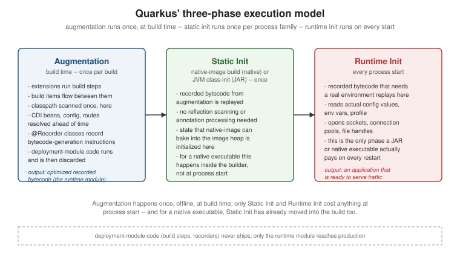

Build-Time Augmentation and the Closed World
|
This content was generated with the assistance of AI and should be verified against the official documentation before being relied on in production. |
Most frameworks do their heaviest work the moment the process starts: scan the classpath, read annotations, generate proxies, wire beans together, then declare themselves ready. Quarkus moves almost all of that work to build time, once, before the artifact is ever run, and ships an application that mostly just replays the outcome. This page explains the mechanism that makes that possible — the augmentation phase and the three-phase execution model it produces — the closed-world assumption that augmentation depends on, how class loading differs between dev mode and production, and the real cost this trade-off imposes on library choice and build time.
Augmentation and the three-phase execution model
Every Quarkus application, JAR or native, executes in three phases, and only one of them happens more than once:
| Phase | When it runs | What it does |
|---|---|---|
Augmentation |
Build time — once per build |
Extensions inspect the application, resolve everything that can be resolved ahead of time (CDI beans, config metadata, reflection needs, routes), and emit optimized bytecode that records the runtime steps needed to reach that same state. |
Static init |
Once — at native-image build time for a native executable, or at JVM class-initialization time for a JAR |
Replays the recorded bytecode that does not depend on the environment the process will actually run in. |
Runtime init |
Every process start |
Replays the recorded bytecode that does depend on the running environment: real configuration values, open sockets, connection pools, file handles. |
The distinction between static init and runtime init matters most for native executables: anything settled in
static init happens once, inside the native-image builder, and is baked into the resulting binary’s image
heap — it costs nothing at every subsequent process start. For a JAR, static init still runs once per JVM
process (during class initialization) rather than once ever, but it is still strictly separated from the
per-request, per-restart cost of runtime init. Either way, the goal of augmentation is to shrink runtime init
down to the smallest amount of work that genuinely cannot be done before the environment exists.

Build steps and build items
Augmentation is not one monolithic pass — it is a pipeline of build steps, the internal unit of augmentation
work. Each Quarkus extension contributes one or more build steps, typically as @BuildStep-annotated methods.
A build step consumes some build items and produces others: a build item is the typed, immutable piece of data
extensions pass between build steps during augmentation — "here is the set of discovered CDI beans", "here is
the list of REST endpoints", "here is the set of classes that need reflective access". Augmentation runs the
whole graph of build steps in dependency order, each one narrowing the picture of the final application a
little further, until nothing is left to resolve. This dependency-graph structure is also why augmentation
composes across dozens of extensions without any of them needing to know about each other directly — they only
need to agree on the shape of the build items they exchange.
@Recorder classes
A build step that needs to affect the running application, rather than just other build steps, does so
through a recorder: a class annotated with io.quarkus.deployment.annotations.Recorder. Calling a method on a
recorder during augmentation does not run that method’s code at build time — it records the sequence of
bytecode instructions needed to reproduce that call’s effect, to be replayed later during static init or runtime
init. The practical benefit is that the actual runtime process never needs the machinery that produced those
instructions: no annotation processor, no reflection-based scanning, no bean-discovery pass have to be present
or resident in the running application, because their entire output has already been reduced to a short,
concrete sequence of bytecode operations.
Deployment module vs. runtime module
Every Quarkus extension is split into two artifacts, and the split exists specifically to protect this separation:
-
The deployment module contains the extension’s build steps, its recorders' augmentation-time logic, and anything else that only needs to exist while augmentation is running — classpath scanning, annotation processing, code generation. It is a build-time-only dependency and is never placed on the runtime classpath.
-
The runtime module contains the classes the recorders actually reference at static/runtime init — the thin, already-resolved code that ships inside the final JAR or native executable.
This split is what keeps the final artifact small and keeps the closed-world guarantee below meaningful: if the deployment module’s classpath-scanning and code-generation classes shipped alongside the application, there would be nothing stopping some code path from using them at runtime, and the whole "resolved ahead of time" premise would be unenforceable.
The closed-world assumption
Quarkus (and the native-image tooling underneath it) is built on a closed-world assumption: the full set of classes the application can ever reach must be known at build time. That assumption is what augmentation exists to satisfy, and it is what the assumption in turn forbids at runtime:
-
Arbitrary runtime reflection — calling
Class.forNameon a class name assembled at runtime, or reflecting over a class augmentation never saw a reference to, has nothing to resolve against. -
Dynamic classloading — loading a class from a byte array, a plugin JAR discovered at runtime, or anything else not present in the build’s own classpath.
-
Unregistered dynamic proxies — generating a proxy for an interface augmentation was never told about.
Each of these is normally possible to work around case by case (see [the-honest-cost]), but they are forbidden as a default, and that default is precisely the lever that produces Quarkus' three headline properties:
-
Fast startup — because the set of beans, endpoints, and reflective targets was already resolved during augmentation, runtime init does no classpath scanning and no annotation processing; it only replays a short, concrete sequence of recorded instructions.
-
Low memory footprint (RSS) — the metaprogramming machinery that would otherwise need to stay resident to scan, reflect and generate proxies on demand simply is not loaded into the running process at all, because nothing at runtime ever calls it.
-
Native-image compatibility — GraalVM’s own native-image compiler performs a static reachability analysis at build time: it computes the full graph of classes, methods and fields the program can reach and compiles only that graph into the executable, ahead-of-time. That analysis is only possible if the reachable class graph is actually knowable in advance — exactly the guarantee augmentation exists to provide. A framework that resolves its object graph via unconstrained runtime reflection gives that analysis nothing solid to compute over, which is why bolting native-image support onto a purely reflection-driven framework after the fact is so much harder than designing around the closed-world assumption from the start.
Class loading in dev mode vs. production
Production class loading is close to the closed-world ideal described above: one classpath, resolved once,
loaded once. Development mode deliberately breaks that simplicity in order to support live-reload, and does so
with a layered set of classloaders rather than a single flat one — described in full in the
class-loading reference and
dev-mode differences guides. The core idea both pages cover is
isolation: application classes the developer is actively editing sit in a classloader that quarkus:dev can
tear down and rebuild on every save, while the Quarkus platform itself, its extensions, and third-party
dependencies sit in classloaders that stay put across a reload because rebuilding them on every file save would
defeat the point of fast iteration. This is also why dev mode’s runtime behavior is not byte-for-byte identical
to a production JAR or native executable — extra classloader boundaries, a live-reload trigger watching the
filesystem, and augmentation re-running incrementally rather than once are all dev-mode-only realities the
"dev-mode differences" guide exists to enumerate, so that a surprise in dev mode is not mistaken for a
production bug or vice versa.
Between "always re-augment from scratch" (a plain JAR or native build) and "never re-augment" (a long-running
dev-mode process) sits a third package type built for iterative, production-like testing: mutable-jar. A
mutable-jar keeps enough of augmentation’s intermediate state on disk that a subsequent change can trigger
re-augmentation — rerunning only the augmentation pipeline against the changed sources — without needing a
full mvn package from a clean slate. It is slower to start than a fully immutable JAR because it retains the
machinery needed to re-augment, but it lets a tester exercise something much closer to the real production
startup path than dev mode’s continuously-running, hot-reloading process does.
The honest cost
None of the above is free, and it is worth naming the costs plainly rather than only the payoff:
-
Augmentation lengthens the build. A build that used to be "compile Java, maybe run annotation processors" now also runs every extension’s build steps — classpath analysis, bean resolution, code generation — as a real, measurable phase of its own. For a native build, GraalVM’s ahead-of-time compilation and reachability analysis stack an even larger, memory-hungry step on top. Iterative development is designed around this cost (dev mode keeps the JVM warm and re-augments incrementally), but a from-scratch build, and especially a native build, is meaningfully slower than a plain
javacinvocation ever was. -
Libraries need to cooperate with the closed world. A library that resolves its behavior via unconstrained runtime reflection, dynamic classloading, or an unregistered dynamic proxy gives the closed-world analysis nothing to see through — augmentation cannot infer intent it was never told about. Such a library needs either a Quarkus extension (a deployment/runtime module pair that tells augmentation exactly what that library needs reflective access to) or, at minimum, explicit Quarkus-compatible reflection registration — it does not work well, or sometimes at all, purely by being present on the classpath.
When a dependency has no extension, the practical options, roughly in order of effort, are:
-
Register the specific reflective needs yourself — a
reflection-config.json(GraalVM’s native-image reflection configuration format) or anative-image.propertiesfile bundled with the dependency or added in the application, listing exactly which classes, constructors, methods and fields must remain reachable. -
Annotate the types directly with
@RegisterForReflection(io.quarkus.runtime.annotations.RegisterForReflection) when the classes needing reflective access are the application’s own — the simplest option, but it only reaches code you control. -
Check Quarkiverse (the community extension catalogue) before writing either of the above by hand — a meaningful share of popular libraries already have a community-maintained extension that does this registration correctly, including the fiddly transitive cases a hand-written config easily misses.
-
Run that dependency on the JVM only. When a library genuinely cannot be made closed-world-compatible — because it does something native-image’s static analysis cannot be taught to see through — the pragmatic fallback is to accept it as a JVM-mode-only dependency and not attempt a native build for the component that needs it, rather than fighting the closed-world assumption dependency by dependency.
The following compares where the work happens for a typical runtime-reflection-based framework against Quarkus: the left path does its heaviest lifting after the process has already started; the right path has already done almost all of it before the artifact was even produced.